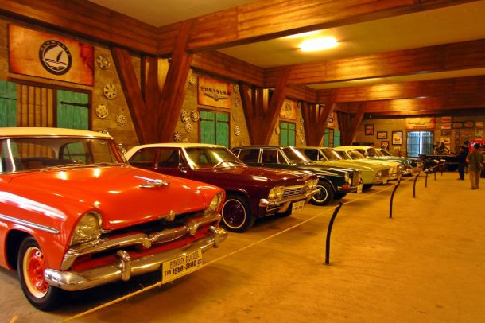

Museum Angkut
Museum Angkut merupakan museum transportasi dan tempat wisata modern yang terletak di Kota Batu, Jawa Timur,[1] sekitar 20 km dari Kota Malang. Museum ini terletak di kawasan seluas 3,8 hektar di lereng Gunung Panderman[2] dan memiliki lebih dari 300 koleksi jenis angkutan tradisional hingga modern. [3] Museum ini terbagi dalam beberapa zona yang didekorasi dengan setting landscape model bangunan dari benua Asia, Eropa hingga Amerika. [1] Di Zona Sunda Kelapa dan Batavia yang merupakan Replika Pelabuhan Sunda Kelapa, dihiasi oleh beberapa alat transportasi kuno seperti becak dan miniatur kapal. Zona Eropa juga di setting seakan-akan berada di jalanan kota-kota di Prancis dengan mobil-mobil kuno Eropa.
Pecinta mobil klasik, pecinta sejarah, dan penggemar film Hollywood kini menemukan rumah di Museum Angkut. Dengan luas hampir mencapai empat hektar, inilah museum transportasi pertama di Asia Tenggara. Tidak hanya menikmati sejarah setiap mobil, dari angkutan pertama Presiden RI hingga Istana Buckingham Inggris, Museum Angkut menyakin interior yang apik untuk fotografi.[4]
Selain mobil-mobil kuno, salah satu koleksi terbarunya adalah Mobil listrik Tucuxi milik mantan menteri Dahlan Iskan yang sebelumnya pernah mengalami kecelakaan di sebuah lereng gunung di Magetan saat baru diujicobakan.[5] Di museum ini juga terdapat wahana Flight Simulator yang terletak di lantai 3 gedung museum.[6] Museum Angkut dikelola oleh Jawa Timur Park Group yang sebelumnya juga membangun Batu Secret Zoo, Batu Night Spectacular (BNS), Eco Green Park dan Museum Satwa. Museum ini didirikan pada 9 Maret 2014.